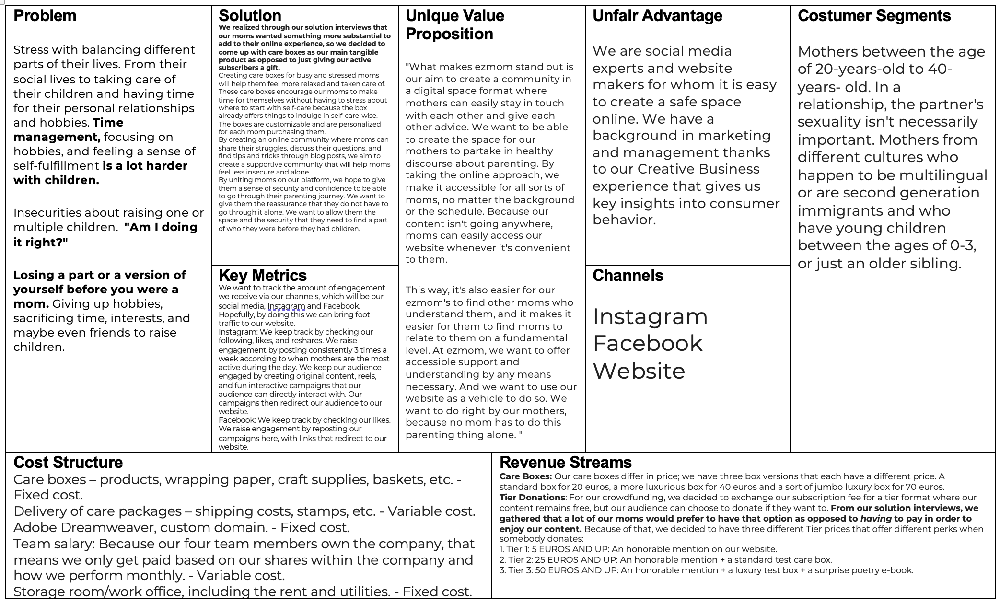
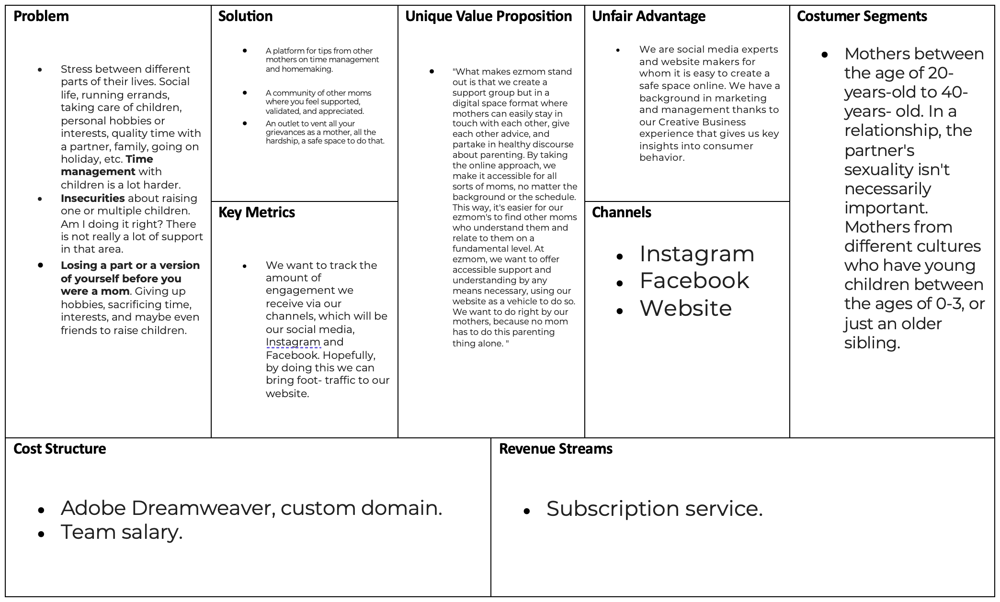
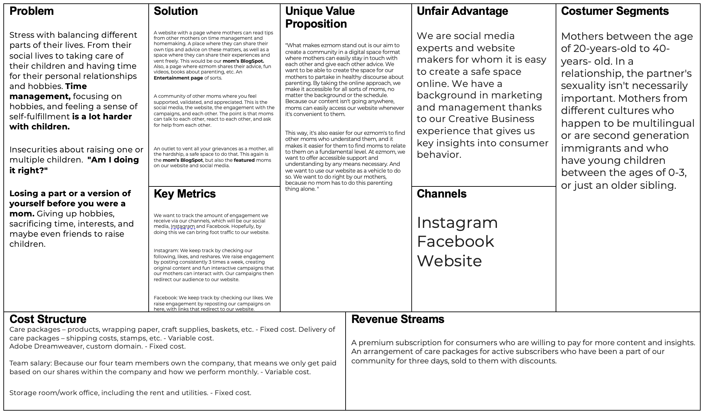

Corporate
General Information
This branded website is publicly available at ezmom-official.github.io/websiteezmom
This website was created by…
- Veerle Stuifmeel (ID: 213731)
- Silvia Gabriela Dirks (ID: 213048)
- Florentina Földesi (ID: 213193)
- Meike Verbaandert (ID: 213261)
Content
| # | Student ID | Description | Link of content |
|---|---|---|---|
| 1. | 213731 | Book Club Blog, Comments, Thank You Page, Veerle Stuifmeel Description | Book Club Blog, Comments 1, Comments 2, Comments 3, Comments 4, Comments 5, Thank You, About Veerle |
| 2. | 213048 | Hero Slider Care Box info, Funding page, Donation Page, Care Box descriptions, Self-Care Blog, Gentle Parenting Blog, Open Letter, Description Silvia Dirks | Hero Slider Care Box, Funding Page 2nd Part, Donation Page, Care Box Page, Self Care Blog, Gentle Parenting Blog, Open Letter Blog, About Silvia |
| 3. | 213193 | Footer About ezmom, About our company, Vision and Values, Description Lili Földesi | Footer About ezmom, Our Company, Vision and Values, About Lili |
| 4. | 213261 | Hero Slider Funding Info, Funding info homepage, Funding page, Vegetables Blog, Reasons To Read Blog, Description Meike Verbaandert | Hero Slider Funding, Funding Homepage, Funding Page 1st part, Vegetables Blog, Reasons To Read Blog, About Meike |
Production
Design Elements
-
A colour scheme
- #FAFDED This colour's name is Ivory. We chose this off-white colour as our lightest colour in the palette. It is off-white on purpose, because we feel like normal white is too harsh for the soft and gentle visual identity that we are trying to convey.
- #F4AFB4 This colour's name is Cherry Blossom Pink. Pink is the colour associated with femininity. We specifically chose this pastel teint as it portrays a more soft and gentle feeling.
- #E78B73 This colour's name is Salmon. We chose this beautiful softer orange as a bit of a contrast to the Cherry Blossom Pink and Redwood. It is right between the two darknesses and is a bit of a bolder colour for emphasis.
- #9F4A54 This colour's name is Redwood. This red is not bright or vibrant, but still a very noticable colour. We chose this as it is a little bit bolder, but still soft in a way, which we think fits a mom. It also feels feminine.
- #040403 This colour's name is Black. It is the biggest contrast against Ivory and therefore the reson we chose the colour. It fits with all the other colours and is very nice as an outline or as a main font colour.
- The font for our logo is Blithe, which is a handwritten, round font. We chose this as our logo font because it fits a mom's handwriting. The font for emphasis or titles is Galada, which is a rounded, more funky, calligraphy font. We chose this font as it is very noticable, a little playful and fits the positive vibe we try to convey. Our main font is Hind, which is a very clear, but not your typical base font like Arial or Times New Roman. It has a more modern feel, which fits with our target group of moms who know their way around modern devices like social media and websites.
- User interface design patterns are reusable/recurring components which designers use to solve common problems in user interface design, according to (“What Are User Interface (UI) Design Patterns?” 2021). The first UI pattern the ezmom website makes use of is a horizontal menu bar. In UI, hierarchy is very important because it can easily guide a user to where the designer wants the user to go to first. The second UI pattern on the website is a carousel. One of the principles of designs is to create engaging and dynamic content that grabs a user's attention. A carousel is a way to provide users with quick information about multiple different topics, and it is able to do this with limited space because the slider keeps moving. To create easy access to our social media pages we used buttons in the shape of the social media logo. This way it is easy for the users to immediately visually understand what the purpose for the buttons is. Another place where we have created a button is for the easy mom logo. By clicking on this logo, the user automatically gets redirected to the home page. This creates a sense of familiarity for the users, as this button is a common UI element. The search bar in the top corner is another UI pattern. The search bar increases the usability within a website because the bar makes it easy for users to navigate within the site and easily find what they are looking for. This is an easy way to get to certain pages without having to navigate through many pages. Because this bar is a common UI element, it creates a sense of familiarity and trust for the user. A UI pattern we use on our website is a back-to-top button. This button allows users to quickly go back to the top after they have scrolled down on it. Using this button increases the user’s efficiency, as this makes the user instantly able to go back to the top of a page without having to scroll back up. This button is especially convenient on longer pages where the user would have to scroll up a lot, which could make them frustrated. Text fields are another UI pattern that the ezmom site uses. We use it, for example on the ‘contact us’ page, where they can fill out a few things and leave us a message. Using this text field, we allow users to engage within the website. Using this, users leave comments and feedback to the owners. Being able to communicate with the website's owners can help with creating a sense of community. Another text field the ezmom website uses is on the comment sections of blog posts. This comment section also increases engagement within the website, but it especially increases a sense of community because the readers of the website are able to leave comments, reply to each other or even start discussions. The last UI element our website has is the vertical navigation bar on the corporate page. This navigation bar increases the effectiveness of the users because they are quickly able to go to every subject, they need without having to look for it while strolling. The ezmom website fits with our values and personality because with our easy to navigate website we focus on promoting self-care and giving practical tips. Because of this we created a clear and easy to navigate website where moms feel comfortable and confident that they will be able to find the content they are looking for. With our comment section and contact page we use the interface design to create a sense of community and belonging, which is one of the key factors of our brand's personality. With the usage of our color pallet and illustrations, we aim to authentically stand out and have a clear visual identity, which makes it easy for users to immediately recognize our brand. The ezmom website connects to the marketing strategy because the content overlaps between the Instagram page and the website. For example, the book club connects moms from Instagram and unites them on the monthly live stream that is on our website. The design is similar to how our Instagram is designed color and illustration wise, which gives the users familiarity between the Instagram page and the website. The ezmom website design helps show the unique value proposal of the product because we want to make the website easily accessible for as many moms across the world. By using alt text, we aim to make our website accessible to moms who make use of a vocal version of the website. Because our website is easily accessible through the internet, moms from all over the world are able to get access to our content.
Credits
- HTML template from BootstrapMade - ZenBlog (also credited in footer throughout the whole website)
- Image Credits
- Favicon: "simplelogoezmom" by Meike Verbaandert, Silvia Dirks, Lili Földesi and Veerle Stuifmeel
- Header: "ezmomlogo" by Meike Verbaandert, Silvia Dirks, Lili Földesi and Veerle Stuifmeel
- Home: "bloombox" by Silvia Dirks, "careboxeshero" by Silvia Dirks and Veerle Stuifmeel, "flowers" by Meike Verbaandert, "funding" by Katt Yukawa via Unsplash, "goodmom" by Liana Mikah via Unsplash, "liaobox" by Silvia Dirks, "mhpbox" by Silvia Dirks, "momanddaughter" by Meike Verbaandert, "pacifier" by Meike Verbaandert
- Blog: "anonymous" by Jana via Unsplash, "bookfomtam" by Sixteen Miles Out via Unsplash, "bookclubcover" by Silvia Dirks, "gentleparenting" by Alexander Grey via Unsplash, "meike" by Meike Verbaandert, "openletter" by Debby Hudson via Unsplash, "selfcare" by Jared Rice via Unsplash, "silvia" by Silvia Dirks, "veerle" by Veerle Stuifmeel, "vegetables" by Dose Juice via Unsplash
- Gentle Parenting: "aisha" by Shahin Khalaji via Unsplash, "bookfomtam" by Sixteen Miles Out via Unsplash, "candace" by Joeyy Lee via Unsplash, "charlie" by Joshua Rawson-Harris via Unsplash, "gentleparenting" by Alexander Grey via Unsplash, "reeva" by Joeyy Lee via Unsplash,
- Vegetables:"bookfomtam" by Sixteen Miles Out via Unsplash, "jolene" by Jennifer Marquez via Unsplash, "mira" by Jason Moyer via Unsplash, "reeva" by Joeyy Lee via Unsplash, "thalia" by Prince Akachi via Unsplash, "vegetables" by Dose Juice via Unsplash
- Self Care: "aisha" by Shahin Khalaji via Unsplash, "bookfomtam" by Sixteen Miles Out via Unsplash, "candace" by Joeyy Lee via Unsplash, "charlie" by Joshua Rawson-Harris via Unsplash, "selfcare" by Jared Rice via Unsplash, "thalia" by Prince Akachi via Unsplash,
- Open Letter: "bookfomtam" by Sixteen Miles Out via Unsplash, "candace" by Joeyy Lee via Unsplash, "jolene" by Jennifer Marquez via Unsplash, "mira" by Jason Moyer via Unsplash, "openletter" by Debby Hudson via Unsplash, "thalia" by Prince Akachi via Unsplash,
- Book Club: "aisha" by Shahin Khalaji via Unsplash, "bookfomtam" by Sixteen Miles Out via Unsplash, "bookclubcover" by Silvia Dirks, "reeva" by Joeyy Lee via Unsplash, "thalia" by Prince Akachi via Unsplash,
- Reasons to Read: "bookfomtam" by Sixteen Miles Out via Unsplash, "charlie" by Joshua Rawson-Harris via Unsplash, "jolene" by Jennifer Marquez via Unsplash, "mira" by Jason Moyer via Unsplash, "reading" by Liana Mikah via Unsplash
- Funding: "bookfomtam" by Sixteen Miles Out via Unsplash, "tierrow" by Silvia Dirks and Veerle Stuifmeel
- Donation: "tier1" by Silvia Dirks, "tier2" by Silvia Dirks, "tier3" by Silvia Dirks
- Thanks School: "thankyou" by Courtney Hedger via Unsplash
- Care Box: "bloombox" by Silvia Dirks, "bookfomtam" by Sixteen Miles Out via Unsplash, "liaobox" by Silvia Dirks, "mhpbox" by Silvia Dirks
- Thanks School: "thankyou" by Courtney Hedger via Unsplash
- About: "catmomkid" by Jonathan Borba via Unsplash, "lili" by Lili Földesi, "meike" by Meike Verbaandert, "momanddaughter" by Meike Verbaandert, "silvia" by Silvia Dirks, "veerle" by Veerle Stuifmeel
- Contact/Corporate:
- Footer: "bookfomtam" by Sixteen Miles Out via Unsplash, "funding" by Katt Yukawa via Unsplash, "openletter" by Debby Hudson via Unsplash
Testing Report
Proof of Testing in Appendix 3.
- Testing goals: Our testing goals are to see if the website is clear and usable for our target group. We want to be a support system for moms and want them to feel empowered and confident in their decisions and motherhood. Making a fool proof website so as not to get frustrated when trying to navigate our site is an important part within our goal the care of mothers. In order to test this, we have put together a list of seven research objectives.
- Try to order a Bloom Box.
- Try to donate within Tier 2.
- Try to find the vision and values of ezmom.
- Try to watch the video of “From one mom to a mother”.
- Try to read the open letter from anonymous.
- Try to find a link to our Instagram page.
- Try to find out who wrote the article ‘The Importance of Self-Care for Moms’.
- Testing methods and personal findings:
- Test participant one:
Mother of one child, and two-step children. The test was conducted from her own house, and she is within our target group. She tested the sight on one of the group mate's laptop and it was recorded on a group mate's phone. Before the test was conducted, the participant did the solution interview, so the participant already knew a lot about ezmom.
- It was easy for the mom to find the bloom box, and she was able to do this without struggles.
- The mom didn’t yet know what a tier was, but after the explanation she immediately went to the funding page and was able to use the links to redirect her to the right page.
- The mom wasn’t able to instantly find the vision and values. She first went to the home page where she looked around, and even tried clicking on the logo, only to be directed back to where she was. After looking for a while she clicked on about and was able to find the vision and values.
- The mother was not able to find the video, and after searching for a few minutes, starting at the blog page, she gave up finding the video.
- The mom was quickly able to find the open letter, and she could also easily find who wrote what blog article.
- The mom was instantly able to find the Instagram page.
Here are the findings from participant one.
- Test participant two:
Mother of three. The test was conducted from her own house, and she is within our target group. She tested the sight on one of the group mate’s laptop and it was recorded on a group mate’s phone. Before the test was conducted the participant did the solution interview, so the participant already knew a lot about ezmom.
- The mom was easily able to order the bloom box.
- The mom also needed an explanation about what a tier was, but after the explanation she could find it easily.
- For the vision and values, the mom instantly looked on the home page, but quickly went to the about page when she realized she was in the wrong place.
- The participant initially tried to look for the video in the blog page, but when she couldn’t find it there, she tried the home page. This participant also wasn’t able to find the video on her own.
- It was easy for the mom to find the open letter and to figure out who wrote which article.
- To get to the Instagram page the mom first clicked on the contact page, but when she couldn’t find it there, she found it in the top corner.
Here are the findings from participant two.
- Test participant three:
Mother of two. The test was conducted from her own house, and she is within our target group. She tested the sight on one of the group mates laptop and it was recorded on a group mates phone. Before the test was conducted the participant got a quick overview about what ezmom is.
- The mom was easily able to find the bloom box.
- After an explanation of what tiers are the mom went to the funding page, where she found where to donate easily after following a link.
- The mom needed a quick explanation for the vision and values, but once she knew what it was, she could find it within seconds.
- For the open letters for moms she could instantly find it on the blog page.
- The link to the Instagram was easily finable, although the icons were a bit small, so it was hard to see which icon was which.
- It was easy for the participant to find who wrote which article.
Here are the findings from participant three.
- Test participant four:
Mother of two. The test was conducted from her where she works out, and she is within our target group. She tested the sight on one of the group mate's laptop and it was recorded on a group mate's phone. Before the test was conducted, the participant got a quick overview about what ezmom is.
- The mom was easily able to figure out how to order the bloom box.
- The mom was easily able to donate within the second tier, and easily was able to click through the links to get where she needed to go.
- The mom immediately knew to find the vision and values in the about page.
- To search for the video, the participant started searching on the blog page. She was able to find the video after searching for it shortly.
- The participant tried to look for the open letter on the menu and came to the ‘single post page’. After that didn’t work, she tried to look on the blog page where she could easily find it.
- The mom searched for the Instagram link of the contact page but quickly saw that she needed to click on one of the icons in the corner.
- The mom could quickly find who wrote which blog.
Here are the findings from participant four.
- Test participant five:
Mother of one. The test was conducted from her own house in the canteen of her sport club, and she is within our target group. She tested the sight on one of the group mates laptop and it was recorded on a group mates phone. Before the test was conducted the participant got a quick overview about what ezmom is.
- The mother was quickly able to order the bloom box.
- After a quick explanation of what tiers are, the participant easily went to the funding page, where she easily used the links to get to where she needed to be.
- The participant instantly went to the about page where she easily found the vision and values.
- The mom thought to search for the video on the blog page, but she was not able to find the video on her own.
- The participant was easily able to find the open letters to mom.
- The mom could quickly find the Instagram link, but mentioned liking the icons to be a bit bigger.
- The participant was instantly able to figure out who wrote which article.
Here are the findings from participant four.
- Test participant six:
Mother of three and pregnant. The test was conducted in the canteen of her sport club, and she is in our target group. She tested the sight on one of the groupmate’s laptop and it was recorded on a groupmate’s phone. Before the test was conducted, the participant got a quick overview about what ezmom is.
- The mom could quickly order the bloom box.
- When the mom went to the funding page, she looked over the link she needed and clicked on a few other links. When she got too lost the teammate redirected her to the previous page, and when she got back to the funding page, she was able to donate to the second tier.
- The participant clicked on the about page and was easily able to find the vision and values.
- The participant searched for the video on the blog page but was not able to find it on her own.
- The mom could easily find the open letter to moms.
- The mom searched for the Instagram link in the contact page, but later was able to click on the Instagram icon.
- The mom clicked on the article she needed to find the author of and could not find the author on the blog page. When she looked through the entire page, she came to the conclusion she needed to go back one page and was able to find it there.
Here are the findings from participant four.
- Test participant seven:
Father of three, although his role within this test report is looking at the website from a professional ICT perspective. The test was conducted in his own home. He tested the sight on one of the group mates laptop and it was recorded on a group mates phone. Before the test was conducted, the participant got a quick overview about what ezmom is.
- The participant could easily find the bloom boxes.
- The ICT professional could easily find how to donate to the second tier.
- The participant could easily find the vision and values, immediately clicking on the about page.
- He was not able to find the video on his own and mentioned not realizing the video would be on the blog page.
- To go to the Instagram page the participant went to the contact page, but upon seeing that he wouldn’t be able to find it there, he easily saw it in the corner.
- The tester could quickly find the open letter to moms and who wrote which blog.
Here are the findings from participant four.
- Test findings in order of importance:
- What went well:
- All mom found it easy to find the care boxes without any struggles.
- It was easy for the participants to use the blog page and to figure out where the open letter for moms was, and who wrote which article.
- It was easy for most participants to donate to tier two, after some explanation about what tiers are, and the links on the website made sense and could easily redirect the users. One of the participants had to look around the site for a bit longer, but in the end, everyone was able to get the donations.
- For a lot of people, it was easy to find a link for Instagram although over half of the participants first went to the contact page to look for it.
- What didn’t go so well?:
- Only one of the participants was able to find the video ‘From One Mom To A Mother’.
- A few of the moms had issues with finding the vision and values and tried to look for them on the home page.
- When looking for the link to Instagram, most of the mothers clicked on the contact page before finding the links in the top corner or at the end of the page.
- Future Imporvements
- The letter type for the word ‘video’ was hard to read, so that could benefit from changing.
- The video could also be easier to find if it has a title so that it has a more prominent place on the page.
- A bigger play button could be added to the video so that it was clearer that it wasn't a picture.
- Something that could be improved for the future is adding a link that leads to the about page on the home page could make it easier for people to find our visions and values.
- The social media icons could be made a bit bigger so they were more easily noticeable.
- The social media links could be added to the contact page.
- The name of the author could be added to the blog page of the blogs so that moms are able to see who wrote it after clicking on the name.
Marketing
Full Communication and Marketing plan in Appendix 4.
Context of campaign and promotional activities
Goal of ezmom
Our goal is to make moms’ lives easier. We would like them to also think about themselves not only taking care of their children. We want them to feel safe within our community, in a place where they can turn to other moms for advice and find comfort in our posts, and advice. We encourage moms to join our weekly challenges, where they include their children as well, but still have some space to only focus on themselves.
Reach Objectives
From the 13th of March 2023, we would like to reach 500 people via Instagram and and 150 visitors on our Facebook page by the 10th of April 2023.
Affect Objectives
We want our target audience to feel appreciated, understood and seen. Often, mothers carry the heavy load of childcare, taking care of the house and also balancing a full-time or part-time job into their already busy schedule. We want to create a community where these mothers feel safe, respected and understood. Where they can vent, make friends or just feel as if their experiences are valid. We want to let them know that they are not alone. Within this community, we want to faciliate their lives through communal emotional support and through our own tips and tricks. EZmom is meant to make mom’s lives, well, easy. It’s for the modern woman who’s a mother -a mothern of sorts. We want to have at least 15 comments on Instagram by the 10th of April, 2023 is our goal.
Response Objectives
We would like our target audience to join a community of other moms. We would like the moms in our community to take our tips, to interact with each other and to feel comfortable sharing their experiences with motherhood within our community. We want our moms to interact with our content and products in a meaningful way, where they can then share our brand and vision with other moms who might be dealing with loneliness and who might be dealing the heavy balancing act of motherhood and modern day life. We want to have at least 4 moms to participate in our challenges and share them on their own socials by the 10th of April, 2023.
Campaign Context
We started with Toddler Time Capsule where we tried to engage our audience with some fun activities involving their children. We asked them to put some personal items of their babies or children in a box or so-called “time capsule”. They can save that for 10 years or more and reveal it to their grown up, or just leave it for themselves. We asked them to share their time capsules since we are doing a race out of it, and whose Toddler Time Capsule was the best will be featured on our website this month.
Moving on to our next campaign we created a Bookclub for our moms, where we shared a couple of books to read. The books were about cute stories of motherhood, problems, and some practical tips. We encouraged them to read those in a month since this event takesreadlace every month, and on the last Friday of every month, we are discussing it through a live.
Why Instagram?
As we have mentioned previously our moms are fairly young since they are between the age of 20-40. They are very up-to-date with the technology and they know what is trendy and what is not. Instagram is today’s world's most popular social media platform. It has all a user needs, a site of friends, events, bars, restaurants, etc. We were able to create a valuable connection with our target audience here. Instagram is also famous of its nice algorithm, so it works in our favor. Also, study conducted in the US shows that one out of four women over 18 are moms, 93% of them use Instagram at least once a week, and 68% use it daily. Moms check their social media 15 times a day on average, and 6 of those times they check their Instagram. Half of the mothers using Instagram follow business accounts and interact with them as well. 78% of active Instagram-using moms take action after seeing an inspiring business post. That means that Instagram is a great platform to use, as the research shows that moms are willing to engage with businesses. Due to this, Instagram is a great platform to help us reach our goal of having 150 visitors to our website by the 10th of April, 2023. By using popular and targeted hashtags, Instagram will also be a great tool to reach a part of the 500 people we want to reach in order to complete our goal.
Why Facebook?
Research shows that moms use Facebook to stay up to date with their friends, and share their lives and their opinions. They are also using it to get information about school events, health and parenting advice, and product recommendations. 58% of the moms say Facebook is the platform they turn to to find product recommendations. Facebook will help us get to reach our objectives because our brand aligns with what they are looking for on Facebook. If they find us through Facebook and see that we are specialized for their needs, like product recommendations and the sharing of parenting/health tips and tricks they are likely to click further. Using Facebook’s detailed ad targeting, our advertisement is likely to reach our target audience, which will make our advertisements effective. This will help us reach a part of the 500 people within our target audience while using Facebook
Learning Points
- I became the marketing person and the one who was managing the social media platforms, and I was afraid that I am not going to be good enough since I have never done anything like this before. But fortunately, this was something I could have not enjoyed more. I learned so many things about posting times, strategies, and how important making reels and hashtags are. I realized that social media marketing is a thing for me. I learned a lot within this 1 month of posting content and managing the sites. Posting on the given times is hard, but it is not impossible, fortunately, Instagram and Facebook also have options for scheduling the post days, weeks, or even months before the actual posting date so this become very helpful for me. If could I would pay more attention to hashtags in the future, since those play a huge role in social media posts.
- During this project, I learned the importance of consistency within the posting. I also learned how hard it is to get people to participate in campaigns, because although the people I talked to in the solution interviews both said they would have liked to participate, had they seen the posts, in reality, no one did.
- I learned that the beginning stages of creating a campaign are the most fundamental parts of predicting your campaign's success or failure. I realized that it's the foundation for your whole campaign planning, and it represents the essence of your brand. If the foundation isn't solid, you'll notice it from the get-go. What I can say worked for us was sitting together and analyzing any possible direction that our campaign might go in, and trying to find the best direction that represents our vision and our values as a brand the best, and of course, what we want to convey to our consumers. What we would do differently is probably just start sooner with our research. Having started sooner would have probably given us a more detailed insight into what our target audience's tastes are and how their perception might change based on the direction that we wanted to go in. We could have compared! But luckily, we found something that works and that is what the audience is fond of.
- What I learned most is that promoting a website only via social media is not the best way. Via a solution interview, it was suggested to us to also place advertisements in other places moms visit a lot. If you use Instagram, Reels are very effective for big reach, but less well for engagement than posts.
Future Planning
- In my opinion, just keeping up the good work would be beneficial in the future. You have to keep a lot of attention on social media sites, so maybe putting one more person on that task would be great. It would let us improve more, by reaching more target audiences and engaging more moms, by showing them that it is worth joining our community.
- Based on my solution interviews, I think including discussions would be beneficial to our social media, for example by having a weekly parenting question that moms can answer, and we can post the answers they have given and allow people to comment and discuss it, to both increase the community and the engagement.
- I would continue using our visual identity as it connects to moms. The name could maybe be altered, or I would have a post or explanation on the website about how to pronounce it and what it stands for. The explanation for what the brand stands for in general is very important to the market as well I have noticed.
- I think that maybe adding more illustrations and creating more content that is in connection with mother-children activities would be beneficial. -in my opinion, there is a huge demand for this on the market.
Professionalism
Management
See Appendix 3 for Interviews.
Lean Canvas
Validation of Assumptions
According to the Oxford Dictionary, a trademark is defined as a “symbol, word, or words legally registered or established by use as representing a company or product”. When this project was developing early on, our team got to thinking about our target audience; “What do we feel represents a mother the best?” We weren’t thinking in terms of trademarking or anything as complex as that. We had our heads in how our consumers might feel when seeing our logo, what type of feeling we want our logo to exude, and how we can connect that to our target audience.
We got to brainstorming, and for some reason, we kept landing on the title “ezmom”, because we thought it was a cute play on words. The “ez” in our brand name refers to the word "easy" because we wanted our brand to feel carefree and easy to get to know. And of course with the "mom" portion in the title we wanted to showcase that our brand is mom-centered first. A community for moms that's easy to join because this motherhood thing doesn't have to be done alone.
We had different logo designs, the one now we have vs another one with the same title but with the baby on the logo. As you can see, we decided to go with the one without the baby. The one that we have now felt more authentic and mom-centered to us. Using the font Blithe in our logo gives it a hand-written and personal feel. It makes it special to read and feels less stiff and corporate. The heart in the middle of our logo represents our heart and soul as a brand, and how we prioritize love in everything we do. The pink chosen in our logo’s heart was very intentional, as the color “cherry blossom” is associated with femininity and womanhood. It’s a gentle and loving color, and that’s the feeling we want to express when you come across ezmom.
Everything we've done for ezmom is intentional, and we're glad we went with this version of our trademark. At the end of the day, we want to center mothers and the experiences motherhood brings. Had we chosen the other logo with the baby on it, it would have felt much more child-focused and though children come first to our moms, our moms come first to us. We felt that our moms needed us just as much, so we wanted to put them first.
Appendix
-
Lean Canvas #1
Justification
Starting off with the justification for the problem portion of lean canvas one, we wanted to ask ourselves what our moms might be going through and how as a developing brand we could help them. We thought time management with children might be hard, having possible insecurities about motherhood and losing your sense of self could also be a possibility. Because these feelings are so universal, we thought that it would be wise to make our customer segment international, with moms between the age range of 20-40 with two kids, both with a huge age gap in order to see how they might be adapting to being a sort of "new" mom all over again. Our unique value proposition would be to offer moms support with the goal of creating a digital support group for them. A solution to their problem would be to fine-tune said community to their experiences, adding things that they might enjoy or want to spend time doing on our website and creating a space where they see their experience represented. We were thinking of making our website based on a subscription basis, where specific content can be accessed through a monthly subscription fee. Our cost structure so far would be the fee for website development and design, paying for our custom domain, and being for our monthly team salary. With our key metrics, we want to track how many mothers would access and enjoy our content through Instagram and facebook's page statistics, hopefully by doing this we can reach the goal of bringing as much foot traffic as possible to our website.
-
Lean Canvas #2
Justification
Starting off with the justification for the problem portion of lean canvas two, we asked our moms what are some of the difficulties they face the most as a mother to two kids with such a huge age gap. In our previous lean canvas, we had made the suggestion that time management with children might be hard, and through our problem interviews, a lot of our moms confirmed this to be true. What came up a lot is that many of our moms indeed have many insecurities about motherhood and often feel like they don't know what's going on half of the time and they are just winging it. Many of our moms also felt like they lost their sense of self, making their children their whole identity and sacrificing big parts of themselves so they could take care of their kids. Our customer segment is international, with moms between the age range of 20-40 with two kids, both with a huge age gap in order to see how they might be adapting to being a sort of "new" mom all over again, as stated earlier. Our moms within this customer segment also have partners, but still mentioned to us how there is still a huge lack of support, especially mentally and emotionally because being a mother can often be draining and there isn't time for self-care. Our unique value proposition would be to offer moms support with the goal of creating a digital support group for them, and that has not changed.
A solution that we had decided on would be to not only fine-tune said community to their experiences but to also add a specific area within our blog referred to as the Blogspot where mothers can air out their grievances, share their experiences, and give each other tips on homemaking and general things about motherhood. We would also have an entertainment page where moms could let loose and just enjoy our content. This way, we have a good balance between the heavy and the light, the experience on our website would be much more enjoyable for our target audience, making it more personalized by adding things that they might enjoy or want to spend time doing on our website and creating a space where they see their experience represented.
We were thinking of revamping our subscription format a bit by giving premium subscribers who are consistently active a sort of prize for engaging with our website. In general these subscribers would receive extra content that regular readers would not. This prize for our most active, or "gift" would be a care package and would be sold to them at a discount. Our cost structure so far would be the fee for website development and design, paying for our custom domain, and being for our monthly team salary. Added to that, it would also be paying for the contents within the care packages, everything it takes to create the care packages (arts & crafts), and the delivery costs. With our key metrics, we want to track how many mothers would access and enjoy our content through Instagram and Facebook's page statistics, hopefully by doing this we can reach the goal of bringing as much foot traffic as possible to our website. We hope our moms interact with our posts by liking, resharing, and reposting which hopefully brings more people to our website.
- Problem and Solution Interviews and Testing Proof
- Communication and Social Media Plan